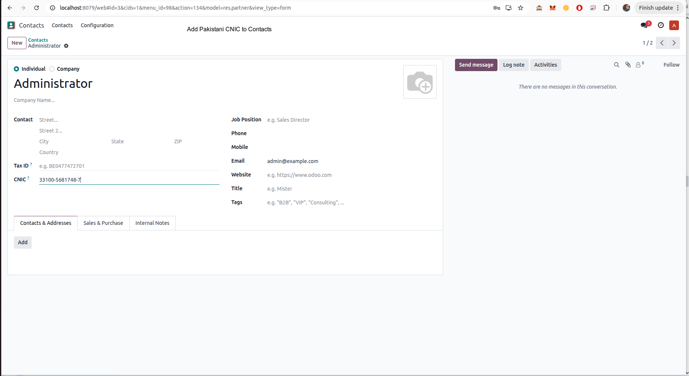
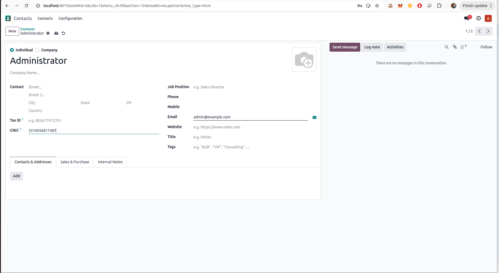
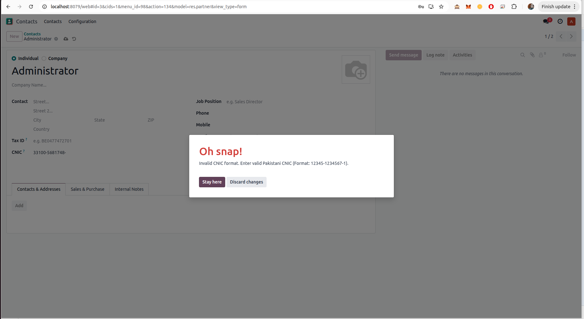
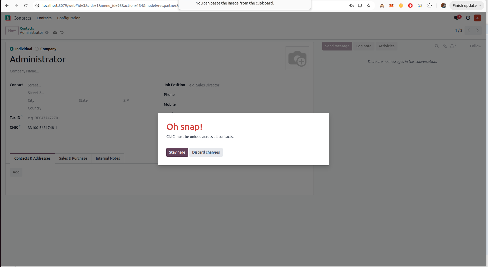

Enterprise-grade CNIC validation module designed specifically for Pakistani Odoo deployments. Ensure compliant identity records, prevent duplicate CNIC entries, and maintain clean contact data across CRM, Sales, Accounting, and all business operations.
CNIC is a critical identity field in Pakistani business environments. Poor validation leads to duplicate partners, incorrect invoices, reporting inconsistencies, and operational errors.
This module ensures:




✔ Odoo 17
✔ Odoo 18
✔ Odoo 19
✔ Community & Enterprise
Maintained by NexERP Labs, specialists in Pakistan localization and compliance solutions for Odoo.
For support inquiries or customization requests, please contact us via Odoo Apps messaging.